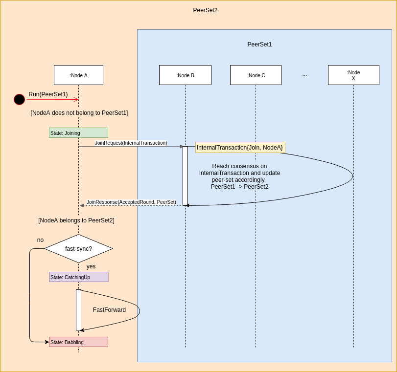

Dynamic Membership¶
Dynamic Membership is an extension to the Babble protocol, which enables peers to join or leave a live cluster via consensus. Until now, we had only considered fixed peer-sets, where the list of participants was predetermined and unchanged throughout the life of a Babble network. This was an important limitation, hindering the formation of ad-hoc blockchains as we envision them. Here we present our solution, and its implementation, which relies on previous work regarding the Hashgraph-to-Blockchain projection, and FastSync.
Overview¶
A Babble node is started with a genesis peer-set (genesis.peers.json) and a
current peer-set (peers.json). If its public-key does not belong to the current
peer-set, the node will enter the Joining state, where it will attempt to
join the peer-set. It does so by signing an InternalTransaction and
submitting it for consensus via a JoinRequest to one of the current nodes.
The InternalTransaction is added to an Event, and goes through Babble consensus, until it is added to a block and committed. However, unlike regular transactions, the InternalTransaction is actually interpreted by Babble to modify the peer-set, if the application-layer accepts it. We shall see that, according to Hashgraph dynamics, an accepted InternalTransaction, committed with round-received R, only affects peer-sets for rounds R+6 and above.
If the JoinRequest was successful, and the new node makes it into the peer-set,
it will either enter the Babbling state directly, or the CatchingUp
state, depending on whether the fast-sync flag was provided. In the former
case, the node will have to retrieve the entire history of the hashgraph and
commit all the blocks it missed one-by-one. This is where it is important to
have the genesis peer-set, to allow the joining node to validate the consensus
decisions and peer-set changes from the beginning of the hashgraph.
The functionality for removing peers is almost identical, with the difference that there will be an automatic way of deciding when nodes should be removed, based on a minimum level of activity (ex: 10 rounds with no witnesses). As of today, a node submits a LeaveRequest for itself upon capturing a SIGINT signal when the Babble process is terminated cleanly.
InternalTransaction¶
In contrast with regular transactions, which only affect the application layer, InternalTransactions are internal to Babble. Babble acts upon InternalTransactions to modify part of its own state, the peer-set, rather than modifying the application’s state. However, the application layer plays a role in accepting or refusing peer-set changes during the block commit phase. For example, the application could refuse all InternalTransactions (thereby preventing the peer-set from ever changing), or accept only up to N participants, or finally, it could base the decision on a predefined whitelist; anything goes, as long as the rule is deterministic (all nodes make the same decision).
type InternalTransactionBody struct {
Type TransactionType
Peer peers.Peer
}
type InternalTransaction struct {
Body InternalTransactionBody
Signature string
}
The ProxyInterface, between Babble and the application-layer, is thus slightly extended to account for InternalTransactions. Here is a example of a CommitHandler that systematically accepts all InternalTransactions:
func (a *State) CommitHandler(block hashgraph.Block) (proxy.CommitResponse, error) {
a.logger.WithField("block", block).Debug("CommitBlock")
err := a.commit(block)
if err != nil {
return proxy.CommitResponse{}, err
}
receipts := []hashgraph.InternalTransactionReceipt{}
for _, it := range block.InternalTransactions() {
r := it.AsAccepted()
receipts = append(receipts, r)
}
response := proxy.CommitResponse{
StateHash: a.stateHash,
InternalTransactionReceipts: receipts,
}
return response, nil
}
PeerSet¶
Until now, the peer-set has been a static list of peers; we now associate each Hashgraph round with a potentially different peer-set. We maintain a sorted table of round-to-peer-set associations, such that all rounds between two consequent entries of this table are associated with the left-most peer-set. For example, if the table of peer-sets is [{0, PS1}, {5, PS2}, {12, PS3}], then rounds 0 to 4 will be associated to peer-set PS1, rounds 5 to 11 will be associated to PS2, and rounds 12 and above will be associated to PS3 (until the peer-set changes again).
We will see in the next section how to account for different peer-sets in the core consensus methods, but since they are allowed to change from one round to another, peer-sets must also be accounted for in the Frame and Block data-structures. Indeed, when verifying a Block, one must know which peer-set to count signatures against. Therefore, we have extended the Frame and Block objects to contain a PeerSetHash, that uniquely identifies the peer-set of the corresponding round-received. In the future, we will need to include a proof of peer-set change inside the Blocks, so that clients may follow and verify the evolution of the peer-set; ie, something that captures the following information:
PS0 + InternalTransaction0 + PS0-signatures(InternalTransaction0) => PS1
PS1 + InternalTransaction1 + PS1-signatures(InternalTransaction1) => PS2
…
PSN + InternalTransactionN + PSN-signatures(InternalTransactionN) => PSN+1
Algorithm Updates¶
There is no better documentation than the code itself, but here is a high level overview of what has changed. This section assumes familiarity with Babble, and Hashgraph.
StronglySee¶
Informally, StronglySee is the function that determines whether there is a path in the Hashgraph connecting two Events such that the path includes Events from a strong majority of participants. This obviously begs the question: “strong majority of which set of participants?”. So we extended the StronglySee method with a PeerSet parameter.
Round¶
An Event’s round is determined by taking the max of its parents rounds, and adding 1 if, and only if, the Event can strongly-see a super-majority of Witnesses from that round (max of the parents). So, in this call to StronglySee, we pass the peer-set corresponding to the max parent round, and the super-majority is counted based on the max parent round peer-set.
Witness¶
An Event is a witness if, and only if, it is a creator’s first Event in its round AND its creator belongs to the round’s peer-set.
Fame¶
With Dynamic Membership, different peer-sets may be involved in deciding the fame of a single witness. Although, Babble’s implementation of the Hashgraph algorithm is slightly different, here are the changes that Dynamic Membership introduce in the algorithm as described in the original Hashgraph whitepaper:
for each event x in order from earlier rounds to later
x . famous ← UNDECIDED
for each event y in order from earlier rounds to later
if x . witness and y . witness and y . round>x . round
d ← y . round - x . round
s ← the set of witness events in round y . round -1 that y can strongly see
** [based on y.round-1 peer-set]
v ← majority vote in s ( is TRUE for a tie )
t ← number of events in s with a vote of v
if d = 1 // first round of the election
y . vote ← can y see x ?
else
** [n ← number of peers in y.round peer-set]
if d mod c > 0 // this is a normal round
if t > 2* n /3 // if supermajority, then decide
x . famous ← v
y . vote ← v
break out of the y loop
else // else, just vote
y . vote ← v
else // this is a coin round
if t > 2* n /3 // if supermajority, then vote
y . vote ← v
else // else flip a coin
y . vote ← middle bit of y . signature
R+6¶
When an InternalTransaction is committed, when should we start counting the new peer-set in order to guarantee that all correct nodes will do the same thing? The answer is R+6 where R is the round-received of the Event containing the InternalTransaction.
We need only determine the lower-bound because the goal is obviously to change the peer-set as soon as possible.
The solution is basically contained in Lemmas 5.15 and 5.17 of the original hashgraph whitepaper:
Lemma 5.15. If hashgraphs A and B are consistent, and A decides a Byzantine agreement election with result v in round r and B has not decided prior to r, then B will decide v in round r + 2 or before.
Lemma 5.17. For any round number r, for any hashgraph that has at least one event in round r+3, there will be at least one witness in round r that will be decided to be famous by the consensus algorithm, and this decision will be made by every witness in round r + 3, or earlier.
If one hashgraph decides RoundReceived = R, then a strong majority of round R witnesses are decided, and by Lemma 5.17 they are necessarily decided in round R+3 or earlier. Hence, by Lemma 5.15, any other consistent hashgraph will have decided by round R + 5 or earlier. It is then safe to set the new peer-set for round R + 6.